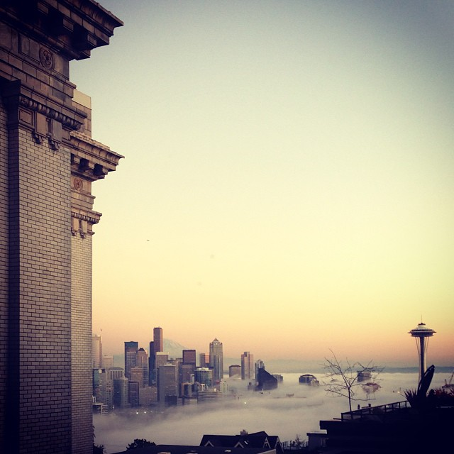
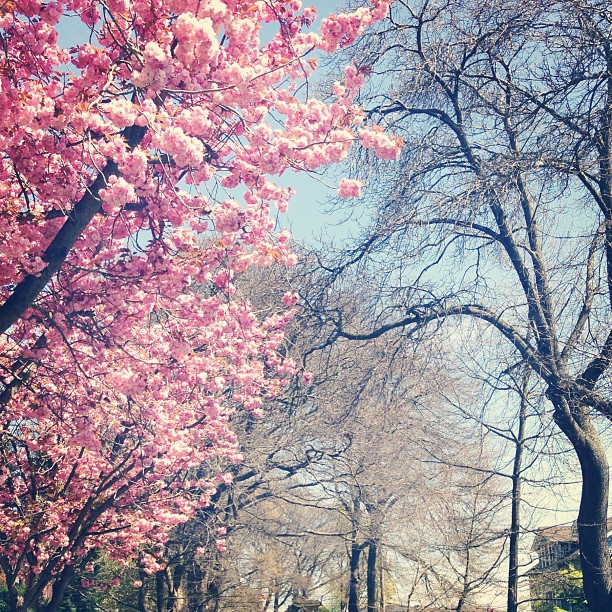

Queen Anne Welcomes You
Recent Agenda and Activites
October 1, 2016
Focus: Council Elections
Written: October 3, 2016 by Sean Champagne
On September 21, 2016, QACC held elections for twelve positions on the community council. Incumbent council members that were re-elected: Michael Crow, Don Harper, Marty Kaplan, Robert Kettle, Margaret Okamoto, Jim Smith, and Mike Warren. New council members include: Brittney Bollay, Sean Champagne, Laura Day, Michael Jerrett, and Catherine Wilson. Congratulations to everyone and we will see everyone at our next meeting on October 5, 2016.
September 7, 2016
Focus: Bhy Kracke Park
Written: September 27, 2016 by Sean Champagne
Katie Bang, capital project coordinator, from Seattle Parks and Recreation Department was the guest speaker and highlighted city renovations to Bhy Kracke Park to an approximate meeting of 45 people. The focus of the discussion was on the necessary slope management the city will undertake to reinforce the hillside. Including planning, designing, and construction the total budget is an estimated $261,000 with construction beginning Summer/Fall 2017. The primary construction will specifically increase the width of the main pathway from 5' to 7', destruction and potential reconstruction of the park arbor covered in wysteria, construction of the new wall, and removal of a couple secondary and unsanctioned pathways. Questions from the crowd highlighted a concern of the arbor, but the biggest concern from the crowd appeared to be lack of maintenance by the city officials. A 30 year Queen Anne resident highlighted the last 8 years since the 2008 financial crisis with deep budget cuts the city has shirked responsibility in park maintenance which has allowed invasive species such as Himilayan blackberry and morning glory to completely take over the park and kill off many of the origin vegetation that was maintained by the city. More information can be found below:
 #Seattle TweetsSince the 1940s, Queen Anne Community Council has . . .
. . . served the Queen Anne neighborhood in Seattle, Washington. We are a not-for-profit organization of community members that work together with both the local community members and the city of Seattle. When issues face Queen Anne, the QACC galvanizes around issues that affect the community. We are an open organization to all residents and employees of Queen Anne.
Please join the Queen Anne Community Council the first Wednesday of every month at 7:30 p.m. at:
Queen Anne Manor
100 Crockett St.
Seattle, Washington, 98109
Parking is easy to find both on the street and in the private parking lot.
Simply sign in and you will be directed to the meeting room, and we will be there!
Meeting Archives
[Waiting for additional archives to be generated . . . Happy Fall!]
[Waiting for additional archives to be generated . . .]
About Us!
The Queen Anne Community Council is a 501(c)(4) organization whose members are all residents of Queen Anne and businesses located within Queen Anne. The QACC is governed by a Board of Trustees (the QACC). The current QACC President Ellen Monrad has been a stalwart Queen Anne community activist for decades and has a proven track record of community leadership having served more than a decade as Queen Anne Community Council President. The QACC operates several committees, including but not limited to: the Transportation Committee to serve the necessary transportation needs of our community as density quickly increases; the Land Use Review Committee that works with landowners, potential buyers, and the community to ensure that properties in the neighborhood are properly utilized; and the Parks Committee that deals with all things parks related in the Queen Anne community and works with the Seattle Parks and Recreation Department. The Queen Anne Community Council has a long history of grassroots organization and community involvement and continues to enjoy a robust membership.
Contact
If you are a community member or member of an organization in the Queen
Anne community and you would like to address the QACC at a meeting or
otherwise contact us, please feel free to contact us.
Email: QueenAnneCC@gmail.com
Queen Anne Photo Credit: Bode Champagne